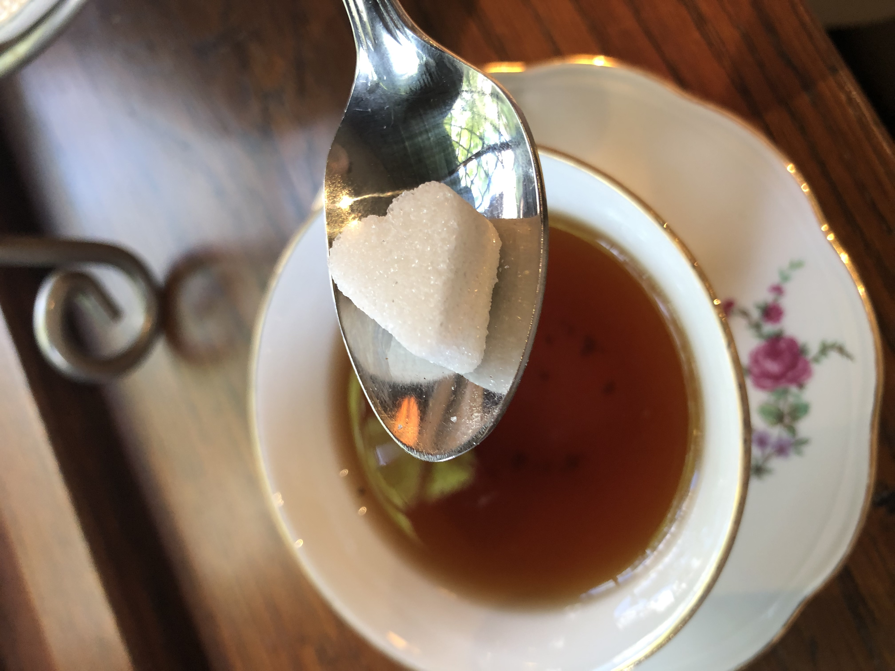

When someone thinks of tea, they are usually thinking about black tea. Black tea has a dark, reddish hue due to the way in which the tea leaves are prepared. Black tea is fermented, whereas green and oolong tea are processed differently. After leaves are dried and stored, the natural elements of the tea are more easily harnessed, including caffeine. Depending on the variety of tea leaf and the manner of processing (as well as the length of time the tea is steeped in hot water), the caffeine content of a cup of tea can be between 60 and 90 milligrams.
I often enjoy a cup of black tea in the morning, as do many around the world, and there are even teas named after the morning meal, such as English Breakfast tea, one of my favorites.

I drank this lovely cup of black tea with an adorably heart-shaped sugar cube.
Types of Black Tea:
Assam
Darjeeling
Ceylon
Breakfast Tea
English Breakfast
Irish Breakfast
Scottish Breakfast
Earl Grey
Lapsang Souchang
Yunnan Red
Kenyan Red Tea
A cup of English Breakfast Tea from a trip to England!
The Oat Milk Matcha Latte
Information provided from my own knowledge and some help from RevolutionTea.com.